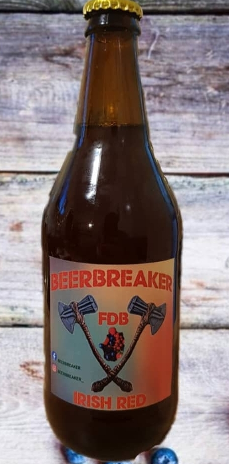
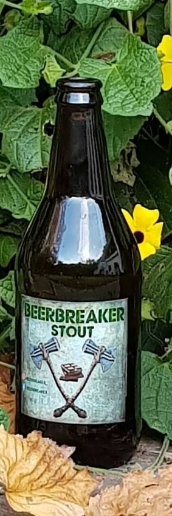

Cerveza rubia

La cerveza rubia, también conocida como cerveza dorada o clara, se caracteriza por su color amarillo dorado, brillante y translúcido. Este color se debe al uso de maltas claras en su elaboración, que son granos de cebada tostados a baja temperatura. Las cervezas rubias suelen tener un sabor suave y dulce, con un amargor moderado, y son conocidas por su carácter refrescante, lo que las hace populares para disfrutar en climas cálidos.
Cerveza roja
La cerveza roja, también conocida como Irish Red Ale o Red Ale, es un estilo de cerveza que se caracteriza por su color rojizo cobrizo y un sabor balanceado
Cerveza lupulada

Una cerveza lupulada se caracteriza por un sabor y aroma intensos y complejos proporcionados por el lúpulo, un ingrediente clave en la elaboración de cerveza. El lúpulo puede aportar diferentes notas, como amargor, cítricos, flores o incluso sabores herbales, dependiendo de la variedad utilizada. Las cervezas lupuladas suelen ser descritas como intensas, refrescantes o con un amargor marcado, y pueden variar en cuerpo y nivel de alcohol.
Cerveza negra
La cerveza negra, también conocida como cerveza oscura, se caracteriza por su color profundo, que va desde el ámbar intenso hasta el casi negro, y su sabor robusto. Este color y sabor se deben al uso de maltas tostadas o especiales durante la elaboración. La cerveza negra puede variar en estilo, desde las stouts irlandesas hasta las porter inglesas, pasando por las schwarzbier alemanas, cada una con sus propias características y matices.